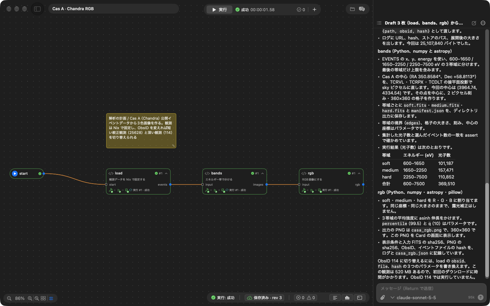
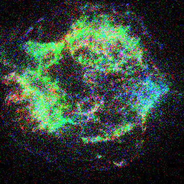

Claims and how to check them
A table of what Tsugumi claims and how to check each claim yourself. Instead of reading long explanations, start from the row you are curious about and run it.
test_docs.py checks that the tests named here exist.
Running the checks
Build (Nix is the only prerequisite):
nix develop -c bash -c 'cmake -S . -B build -G Ninja && ninja -C build tsugumid tsugumi-worker tsugumi_core_tests'
Run the C++ tests:
nix develop -c ctest --test-dir build --output-on-failure
Run the Python tests. You can name a file or a test (for example test_scheduler.py):
nix develop -c bash -c 'cd tests/python && python3 -m pytest -q'
The shared-VM tests run on a Mac that can use Virtualization.framework, with TSUGUMI_TEST_CONTAINER=1.
The last results
| Environment | Commit | Result |
|---|---|---|
| Linux and macOS (GitHub Actions) | 6887c37 | Passed on main (2026-11-08). C++, Python (276 passed, 55 skipped), Swift (macOS/CoreTests, macOS/Tests). The scope is in ci.yml |
tsugumid on a Mac (M3 Max, macOS 27.2, Seatbelt) | 6a7ef73 | All C++ tests passed. Python: 282 passed, 49 skipped (2026-11-08). Skipped: 29 shared-VM tests, 19 tests that run whole demos, and 1 test that does not apply to a Mac |
Shared VM (the same Mac, TSUGUMI_TEST_CONTAINER=1) | 6a7ef73 | Python: 311 passed, 20 skipped (2026-11-08). The 29 VM tests above all passed. Skipped: 19 tests that run whole demos (only with TSUGUMI_TEST_DEMO_RUNS=1, as their Nix downloads are large) and 1 test that does not apply to a Mac |
The same checks can be run locally with tests/ci-local.sh (on a Mac it runs the Linux job in a Docker container).
How to check each claim
Tests marked "VM" run only on the shared VM.
| Claim | Tests | Code and records |
|---|---|---|
| Each Card's environment is pinned with Nix, and build results are reused | test_shared_vm.py::test_build_roots_across_reopen_store_cleanup_and_copies (VM), test_cards_container.py::test_nix_upstream_references (VM), the C++ upstream_* tests | sdk/nix/default.nix, Features §3 |
| The types of ports check that wiring is consistent | The C++ structural_compatibility and merge_union_keeps_origin tests | core/src/graph.cc, Typed ports |
| Branches, merges, bounded loops and Cards in Cards run | test_scheduler.py::test_subgraph_runs_as_one_card_and_keeps_paths_apart, test_scheduler.py::test_max_runs_is_enforced, test_demos.py::test_collatz_27, test_demos.py::test_collatz_limit_overflow_and_skipped (loops in C++ and Python; run in CI), test_demo_collatz.py (four languages and R's range; with TSUGUMI_TEST_DEMO_RUNS=1) | core/src/scheduler.cc, the Collatz demo |
| What is shown as finished has a saved record behind it | test_regressions.py::test_history_write_failure_fails_the_run, test_contract.py::test_fault_injection_never_leaves_partial_updates | Rationale |
| Each run's version and result can be followed, and work can restart from an old version | test_versions.py::test_runs_commit_note_and_branch, test_versions.py::test_a_run_note_says_what_ran, test_versions.py::test_a_version_has_its_canvas_diff_and_summary, test_versions.py::test_the_casa_demo_carries_its_trials | core/src/versions.cc, Versions |
| Partial runs start from the middle (with saved inputs) | test_regressions.py::test_saved_file_inputs_survive_cache_clear_and_restart, test_regressions.py::test_saved_inputs_missing_port_fails, test_scheduler.py::test_run_from_one_branch_meets_the_saved_values_of_the_others | How partial runs are designed |
| Cards are isolated, and their network is off by default | test_host_isolation.py::test_a_sandboxed_card_reaches_no_port_and_no_file_of_this_host (CI on Linux and macOS), test_host_sandbox.py::test_a_card_with_network_reaches_nothing_on_this_host, test_cards_container.py::test_isolation (VM), test_workers.py::test_network_is_off_unless_the_card_allows_it (VM), test_shared_vm.py::test_projects_share_the_store_but_not_users_views_or_processes (VM) | Security and isolation. Network access of Nix's fixed-output derivations: §5 |
Reading the .tsugumi/ of someone else's project cannot rewrite anything outside it | test_untrusted_project.py::test_a_journal_record_writing_outside_the_project_is_not_applied, test_untrusted_project.py::test_a_copied_history_names_no_folder_outside_the_project | Checking a Card's permissions is a separate matter |
| A save in which an Agent (the chat in the app or the Web, or the Claude Code plugin) widens a Card's permissions with Tsugumi's tools does not go through without a person's approval (Claude Code's own shell and file operations are outside this) | test_permissions.py::test_an_agent_save_widening_permissions_needs_the_users_approval, test_permissions.py::test_a_card_in_card_is_checked_too, test_claude_code_plugin.py::test_the_agent_key_cannot_answer_approvals_or_reach_the_page_routes (the plugin's key cannot answer approvals) | core/src/permissions.cc, The Agent's permission boundary |
| Both people and the Agent can write comments on a Card, and who did what is recorded (for the Agent, not on the model's own word). How each version changed them can be followed | test_card_comments.py::test_a_model_resolving_a_comment_is_recorded_with_what_it_changed, test_card_comments.py::test_what_a_model_says_about_who_did_it_does_not_count, test_card_comments.py::test_each_version_says_what_it_did_to_the_comments | Features, Versions, core/src/comments.cc |
| The UI and the Agent are equal clients of the same contract | test_agent_contract.py::test_web_agent_keeps_the_contract, test_agent_contract.py::test_swift_copy_of_the_shared_files_is_current | protocol/tsugumi.fbs, The RPC contract |
| Claude's features (models, Skills, subagents, MCP, images, web search) are each used for what they are good at | ToolImageTests (a Card's image reaches the model), TeamTests::helpersImplementDraftsAtTheSameTime (helpers implementing at the same time), test_claude_code_plugin.py::test_tools_and_instructions (MCP), BrokenArgumentsTests (eager_input_streaming), WebSearchTests | Choosing Claude's features by purpose |
| Resident workers and the like keep trial and error light | test_workers.py::test_resident_worker_serves_later_runs (VM), tests/python/measure_stages.py collatz (measured when Collatz had two languages, C++ and Python; it now includes Julia and R) | Measurements |
| With the real Claude API, Cards can be made from Drafts, run and checked | The live API test is liveModelChangesRunsAndReports in macOS/CoreTests, with TSUGUMI_LIVE_API=1. One recorded run is below | Automated tests with the test model: Development.md |
| Cards can be made and run as the documentation says | test_docs.py::test_card_guide_runs_as_written | Your first Card |
AI can be given the same documents (Markdown pages and llms.txt) | test_docs.py::test_llms_txt_guides_agents_to_every_document, test_docs.py::test_markdown_pages_have_links_that_work_on_the_site, test_docs.py::test_pages_point_to_their_markdown_and_the_guide | llms.txt |
| The documents' links, paths and lists match what exists | test_docs.py::test_links_and_anchors_exist, test_docs.py::test_paths_named_in_backticks_exist, test_docs.py::test_protocol_page_is_generated_from_the_schema | test_docs.py |
| It runs on macOS, Linux and Windows (checked on macOS and on Linux, Ubuntu and NixOS; on Windows through WSL2, as far as opening a demo) | test_cli.py::test_a_mac_gets_the_command_in_local_bin_and_nothing_else, test_cli.py::test_linux_builds_the_source_with_nix, test_cli.py::test_windows_installs_in_wsl_and_leaves_a_command_that_starts_it_there (the installers and the WSL handling, not real machines) | Installation, Where it runs |
| What was prepared before the hackathon and what was made during it | No test; see the Git history and the archived snapshot | How it was built |
Plans and the scope of the guarantees are gathered in Plans and guarantees.
A run with the real Claude API
A record of going, with the real Claude API, from a project of Drafts only, through having the app's Agent "Generate Cards", to running them and checking the results.
Automated tests use a test model (tests/fixtures/model_fixture.py, an HTTP server that answers by fixed rules), so the judgement of a real model is checked by this record.
- Date: 2026-11-04
- Model:
claude-sonnet-5-5(Anthropic Messages API, with prompt caching) - Runtime: the shared VM (Apple silicon, macOS 27)
- Operation: a UI script (
TSUGUMI_UI_SCRIPT) pressed "Generate Cards" and waited for it to finish. No person intervened.
The subject: a three-colour image of Cas A
From a Chandra observation of the supernova remnant Cas A, make an image per energy band and combine them into RGB.
The project has four Cards, start → load → bands → rgb; load, bands and rgb are Drafts in which a researcher wrote only the intention.
| Draft | What the researcher wrote (summarised) |
|---|---|
| load | Fetch the observation pinned with Nix: from a HEASARC mirror over explicit FTPS, pinned by hash. ObsID, file name and hash are parameters (ObsIDs 25628 and 114 listed) |
| bands | Split into three bands, 600–1650 / 1650–2250 / 2250–7500 eV. Convert the centre of Cas A (RA 350.8584°, Dec +58.8113°) to sky pixels from the file's coordinates and count on a 360×360 grid centred there. Assert that the photon counts agree |
| rgb | Make a PNG with the three bands as R, G and B, stretched with asinh, and display it. Record the display conditions and the hash of the input |
Result
The screenshots are of the app at the time, in Japanese.

| Measure | Value |
|---|---|
| Model responses (turns) | 20 |
| Tool calls | 31 (reference_read 14, project_save 3, run 3, run_status 3, run_record 3, log_range 3, project_inspect 1, project_validate 1) |
| Tool errors | 0 |
| Runs | 3, all successful (13 s for the first, including fetching the observation; 2–3 s for the second and third) |
| Tokens | 95,676 in, 13,495 out |
The Agent proceeded as its instructions say (Drafts one at a time from upstream: write → validate → save → run → check the result).
- Read the current state with
project_inspect, and the card guide, the Python SDK and a bundled demo (report's Card with File/Directory outputs) withreference_read. (At the time of this record, the bundled demos the Agent could read were report, collatz and live-stream. It can now read every demo that has no Draft version, but still not the Draft demos nor their finished forms such as casa: being able to read them would let it copy the answer, and this record would check nothing.) - Write
load, validate it withproject_validatebefore saving,project_save, run it withrun, and check withrun_status,run_recordandlog_range. - The same for
bands, thenrgb, one at a time. - Finally, report what was implemented and how.
The generated default.nix of load (excerpt). The observation is fetched as a Nix fixed-output derivation, and later runs use the file in the store.
raw = pkgs.fetchurl {
inherit url; # ftp://heasarc.gsfc.nasa.gov/chandra/data/byobsid/8/25628/primary/...
curlOptsList = [ "--ssl-reqd" ]; # explicit FTPS
hash = params.hash; # a param with "nix": true
};
data = pkgs.runCommand "evt2-${id}.fits" { } "gunzip -c ${raw} > $out";
bands converted the centre of Cas A to the sky pixel (3964.74, 4334.54) and counted 101,187 soft, 157,471 medium and 110,852 hard photons (369,510 in all).
The output of rgb (ObsID 25628, 2.1 ks exposure):

The attempt before, and what was fixed after it
The same subject, tried with a Draft that downloaded the data during every run of the Card (ObsID 114, 523 MB), stopped at the limit of 60 turns.
| Measure | Before | After (the record above) |
|---|---|---|
| Turns | 60 (stopped at the limit) | 20 (finished) |
| Tool calls | 68 (45 of them run_status) | 31 (3 of them run_status) |
| One run | 483 s (523 MB fetched every time) | 13 s (first), 2–3 s |
Causes and fixes:
run_statuswaited only 30 s per call, and waiting for an 8-minute run used up the turns → it now waits up to 5 minutes (returning as soon as the run ends).- Large public data was fetched on every run → the card guide gained a way to pin it with Nix and keep it in the store (a param with
"nix": true,fetchurlwith a hash, the store path passed as a value). - Cards the Agent wrote did not show on the Canvas until the project was reopened → the list of Cards to display is now taken before the diff is applied.